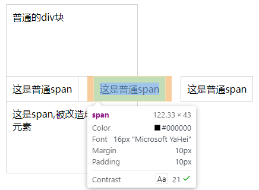

HTML中的元素可分为两种类型：块级元素和行级元素。这些元素的类型是通过文档类型定义（DTD）来指明。块级元素：显示在一块内，会自动换行，元素会从上到下垂直排列，各自占一行，如p,ul,form,div等标签元素。行内元素：元素在一行内水平排列，高度由元素的内容决定，height属性不起作用，如span,input等元素。
每个块级元素默认占一行高度，一行内添加一个块级元素后无法一般无法添加其他元素（float浮动后除外）。两个块级元素连续编辑时，会在页面自动换行显示。块级元素一般可嵌套块级元素或行内元素；
块级元素一般作为容器出现，用来组织结构，但并不全是如此。有些块级元素，如<form>只能包含块级元素。其他的块级元素则可以包含 行级元素如<P>.也有一些则既可以包含块级，也可以包含行级元素。
DIV 是最常用的块级元素，元素样式的display:block都是块级元素。它们总是以一个块的形式表现出来，并且跟同级的兄弟块依次竖直排列，左右撑满。
①、总是在新行上开始；
②、高度，行高以及外边距和内边距都可控制；
③、宽度缺省是它的容器的100%，除非设定一个宽度。
④、它可以容纳内联元素和其他块元素
行内元素一般都是基于语义级(semantic)的基本元素，只能容纳文本或其他行内元素，常见内联元素 “a”。比如 SPAN 元素，IFRAME元素和元素样式的display : inline的都是行内元素。例如文字这类元素，各个字母 之间横向排列，到最右端自动折行。
①、和其他元素都在一行上；
②、宽度就是它的文字或图片的宽度，不可改变；
③丶行内元素只能容纳文本或者其他内联元素
- 设置宽度width 无效。
- 设置高度height 无效，可以通过line-height来设置。
- 设置margin 只有左右margin有效，上下无效。
- 设置padding 上下左右都有效，。注意元素范围是增大了，但是对元素周围的内容是没影响的。
demo：
<style>
div,span{
border: 1px solid lightgray;
padding: 10px;
margin: 10px;
width:200px;
height:100px;
}
.d{
display:block;
}
</style>
<div>普通的div块</div>
<span>这是普通span</span> <span>这是普通span</span> <span>这是普通span</span>
<span class="d">这是span,被改造成了块级元素</span>
结果：

address – 地址
blockquote – 块引用
center – 举中对齐块
dir – 目录列表
div – 常用块级容易，也是CSS layout的主要标签
dl – 定义列表
fieldset – form控制组
form – 交互表单
h1 – 大标题
h2 – 副标题
h3 – 3级标题
h4 – 4级标题
h5 – 5级标题
h6 – 6级标题
hr – 水平分隔线
isindex – input prompt
menu – 菜单列表
noframes – frames可选内容，（对于不支持frame的浏览器显示此区块内容
noscript – 可选脚本内容（对于不支持script的浏览器显示此内容）
ol – 有序表单
p – 段落
pre – 格式化文本
table – 表格
ul – 无序列表
a – 锚点
abbr – 缩写
acronym – 首字
b – 粗体(不推荐)
bdo – bidi override
big – 大字体
br – 换行
cite – 引用
code – 计算机代码(在引用源码的时候需要)
dfn – 定义字段
em – 强调
font – 字体设定(不推荐)
i – 斜体
img – 图片
input – 输入框
kbd – 定义键盘文本
label – 表格标签
q – 短引用
s – 中划线(不推荐)
samp – 定义范例计算机代码
select – 项目选择
small – 小字体文本
span – 常用内联容器，定义文本内区块
strike – 中划线
strong – 粗体强调
sub – 下标
sup – 上标
textarea – 多行文本输入框
tt – 电传文本
u – 下划线